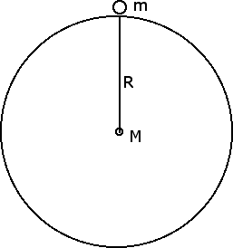

Applicazioni della dinamica
Forza di gravitazione universale
Il secondo principio della dinamica ci dice che le accelerazioni sono prodotte dalle forze ma quali sono le forze fondamentali esistenti in natura? I fisici hanno individuato quattro forze fondamentali: la forza di gravitazione universale, la forza elettromagnetica, la forza nucleare forte e la forza nucleare debole. In questa sezione ci occuperemo della forza di gravitazione universale.
Per avere una forza di gravitazione universale dobbiamo avere due masse m1 ed m2 poste a una certa distanza r. Tra queste due masse si esercita una forza di gravitazione universale F, che è una forza attrattiva avente per direzione la congiungente le due masse e per intensità F = G m1 m2 / r2, dove la costante G = 6.67 · 10-11 N · m2 / kg2 è la costante di proporzionalità, numericamente uguale alla forza in newton con cui si attirano due masse di 1 kg poste a una distanza di 1 m. Dalla precedente formula abbiamo che la forza di gravitazione universale è proporzionale alle due masse ed è inversamente proporzionale al quadrato della distanza, ossia F = k / r2. Questo significa che se raddoppiamo la distanza fra due masse la forza di gravitazione universale diventa uguale a 1/4, se triplichiamo la distanza tra le due masse la forza diventa uguale a 1/9 e così via.
La forza gravitazionale viene detta universale perché si manifesta sempre, ogniqualvolta abbiamo due masse a una certa distanza l'una dall'altra. La grande intuizione di Newton fu quella di capire che la forza che fa cadere una mela verso il centro della Terra è la stessa che tiene la Terra in orbita attorno al Sole. La forza gravitazionale universale è in grado di giustificare tantissimi fenomeni, tra i quali appunto il fatto che la forza-peso di un corpo sulla superficie terrestre è uguale al prodotto della massa m del corpo per 9.8 m / s2.
Infatti supponiamo di porre un corpo di massa m sulla superficie della Terra, considerata in prima approssimazione come una sfera. La forza di gravitazione universale si manifesta perché il corpo ha una massa m e la Terra ha una massa M = 5.98 · 1024 kg che si può immaginare concentrata nel centro della Terra. La distanza tra le due masse coincide pertanto con il raggio della Terra R = 6.389 · 106 m, come emerge dalla seguente figura:

La forza di gravitazione universale che la Terra esercita sul corpo di massa m viene pertanto ad essere uguale a F = G m M / R2 = m G M / R2. Se ora sostituiamo al posto di G, M ed R i rispettivi valori scopriamo che G M / R2 = 9.8 m / s2. Dunque la forza-peso F = m · g è una conseguenza della forza di gravitazione universale mentre il valore dell'accelerazione di gravità g = 9.8 m / s2 discende dai valori della massa e del raggio della Terra.
Se consideriamo la Luna anziché la Terra, la massa e il raggio della Luna sono diversi, di conseguenza anche il valore dell'accelerazione di gravità sarà diverso. Possiamo comunque ripetere i ragionamenti fatti precedentemente per trovare gL = G ML / RL2 e scoprire che l'accelerazione di gravità e, di conseguenza, anche la forza-peso sulla Luna sono circa 1 / 6 dell'accelerazione di gravità e della forza-peso sulla Terra. Anche rimanendo sulla Terra, ci possono essere delle diversità nei valori dell'accelerazione di gravità. Ad esempio, salendo sulla cima dell'Everest, siamo più lontani dal centro della Terra e pertanto l'accelerazione di gravità è leggermente minore: g = 9.77 m / s2. Questa differenza Δg = 0.03 m / s2 comporta per una persona di massa m = 68 kg una perdita di forza-peso di ΔF = 68 · 0.03 N = 2 N che equivalgono a circa 0.2 kgp, ossia 200 grammi-peso.
Quanto vale invece la forza-peso di un corpo di massa m posto all'interno della Terra e a una distanza r dal suo centro? In questo caso si può provare che il peso dell'oggetto è dovuto all'interazione gravitazionale tra la sua massa m e la sola massa della Terra presente all'interno della sfera di raggio r. Tale massa è proporzionale al volume della sfera e quindi ad r3 e va pensata come se fosse tutta presente nel centro della Terra. Siccome il volume della sfera aumenta con r3 mentre la forza di gravitazione universale diminuisce con r2 avremo, come effetto netto, che la forza-peso di un oggetto all'interno della Terra risulta direttamente proporzionale alla sua distanza r dal centro. Di conseguenza, se fossimo esattamente al centro della Terra, il nostro peso sarebbe uguale a 0.